WORRY GUIDE
Reading tarot by decision
The bigger the decision, the more likely you are to go around in circles when you think it through alone. Changing jobs, job hunting, a side project, starting your own business, reskilling, how you use money, love, marriage, parting, caregiving, moving house, relationships. None of these has a single right answer, and whichever you choose, you will have to let something go — that is the kind of decision you're torn over.
On this page, for each common decision you're torn over, we bring together “what is making it hard to judge” and “in what order it helps to think it through,” and introduce tarot cards that can lend you a viewpoint in that situation. Please use the cards not to predict your future, but as questions to help you notice feelings and conditions you had overlooked.
On each page, after explaining how to break down what you're torn about from four viewpoints, we explain one by one why each related card is useful in that situation. Start reading from a theme that interests you, and at the end, try laying out your own two options side by side in DECIDE. — you will likely find it easier to see what you truly want to value than when you were only turning it over in your head.
How to use this page
- Choose the closest themeOpen the one closest to what you're torn about right now. It doesn't have to be an exact match.
- Untangle what you're torn aboutWith “What is making this decision hard” and “Viewpoints for organizing your thoughts,” put into words what you are getting stuck on.
- Borrow the cards' viewpointsRead the meanings of the related cards and look for feelings and conditions you had overlooked.
- Try drawing for realPicture your two options, and draw a card in DECIDE.
Work & Career
Decisions you're torn over that involve how you work and your income. For when comparing conditions alone isn't enough to decide.
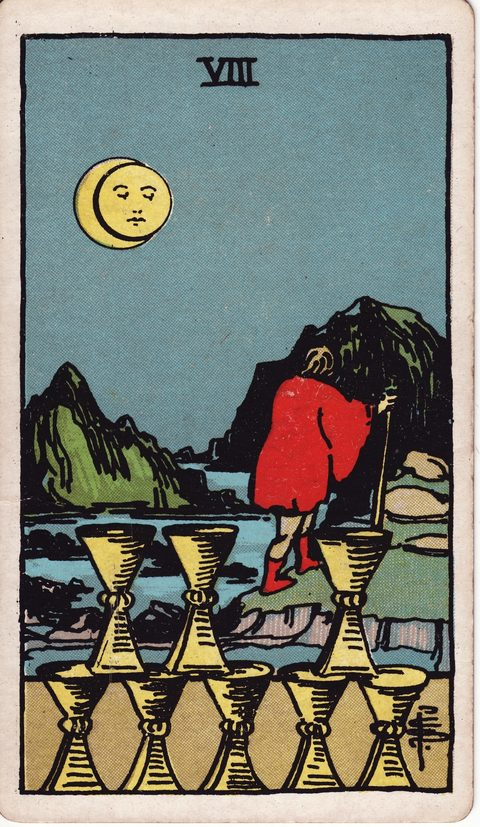
When you're torn about changing jobsKey card: Eight of Cups
Read the thinking →For anyone torn between wanting to change jobs and having reasons to stay at their current workplace. A look at what's behind the indecision, ways to sort it out, how to read the related tarot cards, and questions to ask yourself.
In your current job, is there an improvement you haven't tried yet?

When you're torn during a job huntKey card: Three of Wands
Read the thinking →For anyone whose job hunt has them torn — you can't settle on an industry, you can't decide which offer to accept, or the selection process isn't going well. A look at what's behind the indecision, ways to sort it out, the related tarot cards, and questions to ask yourself.
If you didn't have to care what people around you think, what kind of company would you want to choose?

When you're torn about starting a side jobKey card: Eight of Pentacles
Read the thinking →For anyone who wants to start a side job but is torn — wondering whether they'll have the time and energy, whether it will affect their main job, or what they should even do. A look at what's behind the indecision, ways to sort it out, the related tarot cards, and questions to ask yourself.
How many hours a week do you have available for a side job?
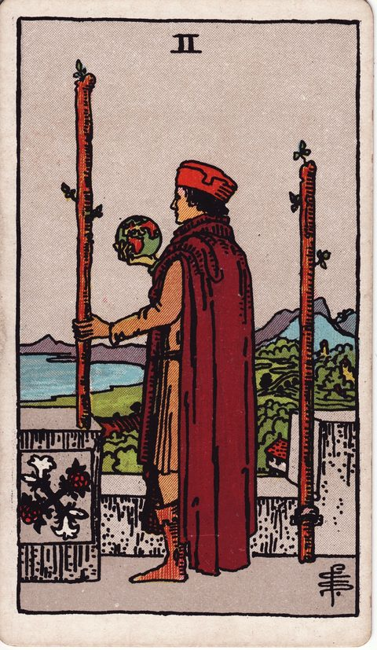
When you're torn about going independent or starting a businessKey card: Two of Wands
Read the thinking →For anyone torn about leaving their company to go independent, or starting a business of their own. A look at what's behind the indecision, between the wish to take on the challenge and anxiety about stability, plus ways to sort it out, the related tarot cards, and questions to ask yourself.
Even if months with zero income continued, how many months could you withstand?
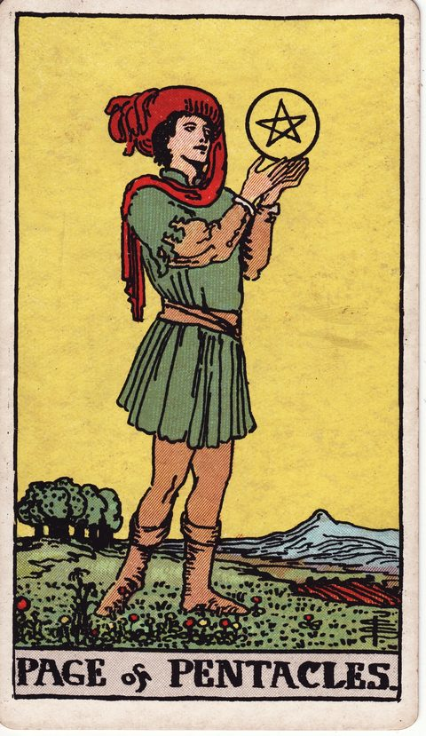
When you're torn about further study or relearningKey card: Page of Pentacles
Read the thinking →For anyone torn over choosing where to study, or an adult relearning or gaining a qualification. Is it worth the time and money? A look at what's behind the indecision, ways to sort it out, the related tarot cards, and questions to ask yourself.
When you've finished this learning, what state do you want to be in?
When you're torn about leaving your jobKey card: Eight of Cups
Read the thinking →For anyone torn about quitting their job. Through what's really behind your reasons for wanting to leave, the money and next steps to sort out before you resign, the related tarot cards, and questions to ask yourself, here are some hints for thinking through whether to leave or stay.
If you had to name just one reason you want to quit, what would it be?
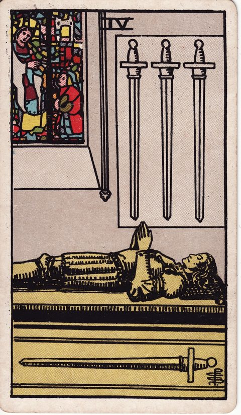
When you're torn about taking time off workKey card: Four of Swords
Read the thinking →For anyone torn about taking time off work, who ends up going in even when they feel unwell. Through what's really behind the reasons you can't rest, the material for judging whether to rest or go in, the related tarot cards, and questions to ask yourself, here are some hints for deciding how to take your rest.
Fever, sleep, appetite, concentration — roughly how many points would you give each?

When you're torn about accepting a job offerKey card: Ace of Pentacles
Read the thinking →For anyone who received an offer but can't quite decide whether to accept it. We've gathered the reasons anxiety can outweigh joy, how to sort out conditions and feelings, the related tarot cards, and questions to ask yourself.
Is the condition you're catching on something that would move if you negotiated, or something that touches the company's essence?

When you're torn about accepting a transferKey card: Wheel of Fortune
Read the thinking →For anyone who has been sounded out about a transfer but can't decide whether to accept or decline. From both sides — the opportunity for your work and the change to your life — we've gathered what's behind the indecision, ways to sort it out, the related tarot cards, and questions to ask yourself.
What meaning do the role and the length of the posting hold for your career?
When you're torn about getting a qualificationKey card: Eight of Pentacles
Read the thinking →For anyone torn about whether to get a qualification. Is it a qualification you really need, and is it worth the time and cost? We've gathered what's behind the indecision, a way of sorting it out by working back from your purpose, the related tarot cards, and questions to ask yourself.
Having gained the qualification, what do you want to change?

When you're torn about studying abroadKey card: The Fool
Read the thinking →For anyone torn between the wish to study abroad and anxiety about the cost and their work. We've gathered a way to sort it out by laying longing and reality side by side, separately, the related tarot cards, and questions to ask yourself.
What do you truly want to gain from studying abroad — language ability, a degree, or the experience itself?

When you're torn about going back to schoolKey card: The Hierophant
Read the thinking →For anyone torn between advancing to a university or graduate school and continuing to work. We've gathered a way to sort out the wish to learn alongside the reality of fees and time, the related tarot cards, and questions to ask yourself.
Is what you want to learn knowledge directly tied to your work, or an education that widens your own world?
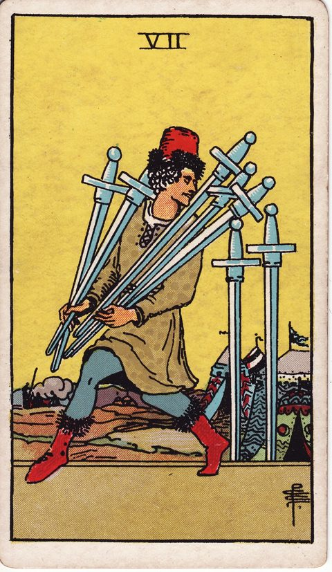
When you're torn about telling your company about a side jobKey card: Seven of Swords
Read the thinking →For anyone torn about whether to tell their company that they have a side job. We've gathered a way to sort it out — checking the work rules, and the risks of telling and of not telling — the related tarot cards, and questions to ask yourself.
What do your company's work rules actually stipulate about side jobs?


Love & Family
Decisions you're torn over that involve your relationships with the people who matter to you. For when you're wavering between feelings and reality.
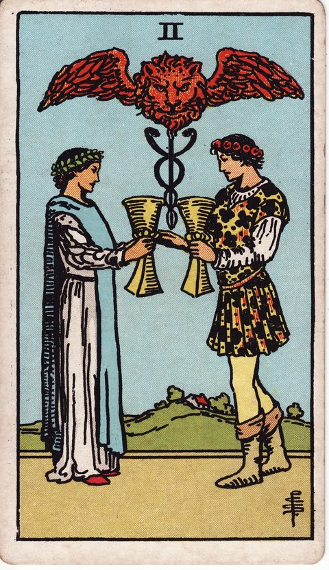
When you're torn in loveKey card: Two of Cups
Read the thinking →For anyone torn in love — whether to confess, whether to continue a relationship, not knowing how the other person feels. We've gathered what's behind the wavering feelings, ways to sort them out, the related tarot cards, and questions to ask yourself.
When you're with the other person, can you be yourself?

When you can't take the step into marriageKey card: The Lovers
Read the thinking →For anyone torn about whether to marry, or whether the person you're with is the right one. We've gathered what's behind the indecision that comes with a big life choice, ways to sort it out, how to read the related tarot cards, and questions to ask yourself.
What do you want to gain by marrying, and what are you afraid of losing?

When you're torn about breaking upKey card: Two of Swords
Read the thinking →For anyone torn about whether to break up with a lover or partner. We've gathered what's behind feelings that waver between affection and unease, ways to sort them out, how to read the related tarot cards, and questions to ask yourself.
Within this relationship, how much of the time can you be yourself?

When you're torn about caregivingKey card: Ten of Pentacles
Read the thinking →For anyone torn about caregiving — whether to care for a parent at home or rely on a facility, whether you can balance it with work. We've gathered what's behind the indecision, between your feelings for your family and your own life, ways to sort it out, the related tarot cards, and questions to ask yourself.
Could you continue the current form of caregiving a year from now?

When you're torn about confessing your feelingsKey card: Ace of Wands
Read the thinking →For anyone torn about confessing their feelings, afraid of breaking the relationship. Through what's really behind your hesitation, how to tell whether to share your feelings or wait, the related tarot cards, and questions to ask yourself, here's how to decide about your feelings.
How long have these feelings continued?
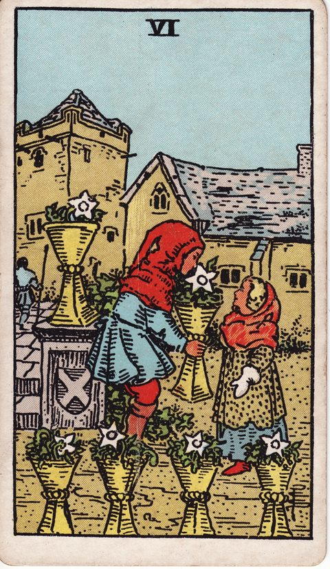
When you're torn over choosing a giftKey card: Six of Cups
Read the thinking →For anyone torn over choosing a gift, unable to decide on anything. Through what's really behind the wish not to miss the mark, how to narrow it down from the other person's daily life, the related tarot cards, and questions to ask yourself, here are some hints for deciding.
What has the other person been having trouble with lately, or seemed to want?

When you're torn about holding a weddingKey card: Four of Wands
Read the thinking →For anyone torn about holding a wedding, or choosing another form such as photos only or a meal together. We've gathered a way to sort out the couple's wishes, the budget, and your feelings toward the people you'd invite, the related tarot cards, and questions to ask yourself.
Whose is this ceremony, and what is it for?
When you're torn about getting back togetherKey card: Six of Cups
Read the thinking →For anyone torn about getting back together with a former partner, or moving forward. We've gathered a way to look again at nostalgia and the reasons you broke up, separately, the related tarot cards, and questions to ask yourself.
Is what you want to return to the person themselves, or the sense of security of those days?


Daily Life, Money & People
Decisions you're torn over that involve the foundations of everyday life. For choices that look small but matter later.

When you can't decide about movingKey card: Six of Swords
Read the thinking →For anyone who can't decide whether to move or stay in their current home. This page brings together what's really behind the decision you're torn over when cost, environment, and relationships are all involved, how to sort it out, the tarot cards connected to it, and questions to ask yourself.
What stresses you most about your current home, and would moving really resolve it?
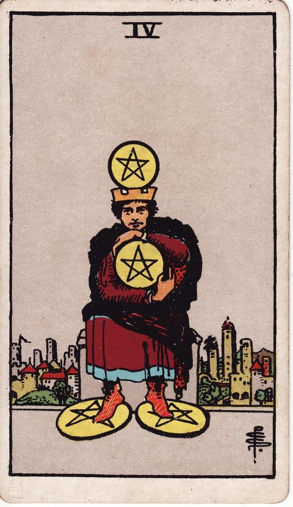
When you're torn over a big purchase or how to use moneyKey card: Four of Pentacles
Read the thinking →For anyone torn over a big purchase such as a car, a home, or an expensive appliance, or over how to use their money. This page introduces what's behind the tug-of-war between wanting something and feeling anxious, how to sort it out, the tarot cards connected to it, and questions to ask yourself.
How would having it change your everyday life?

When you're torn over a relationshipKey card: Eight of Swords
Read the thinking →For anyone torn over whether to continue a relationship with a friend, someone at work, or a family member, or to put some distance between you. This page brings together what's behind being torn over how you relate to people, how to sort it out, how to read the tarot cards connected to it, and questions to ask yourself.
After meeting that person, how do you feel?

When you're torn over buying a carKey card: The Chariot
Read the thinking →For anyone torn over buying a car. Is it really necessary, how much are the running costs, new or used? This page makes life after buying more concrete and introduces ideas for thinking about whether to buy now or wait, through the tarot cards connected to it and questions to ask yourself.
If you had this car, how would your weekly life change in concrete terms?

Decisions on nights when you can't sleep for overthinkingKey card: Nine of Swords
Read the thinking →For nights when something you can't decide keeps going around in your head and you can't sleep. This page introduces what's really behind nighttime thinking as anxiety swells, the choice not to decide tonight, and ideas for carrying things over to the next morning and sorting them out, through the tarot cards connected to it and questions to ask yourself.
Is what is going around in your head right now fact, or imagination?
When you're torn over whether to goKey card: Two of Swords
Read the thinking →For anyone torn over whether to go or not. This page introduces ideas for deciding without regret, through the reasons you can't settle in front of an invitation or a plan, a third option beyond going or not going — changing the conditions — the tarot cards connected to it, and questions to ask yourself.
If you had to name one reason you want to go, what would it be?
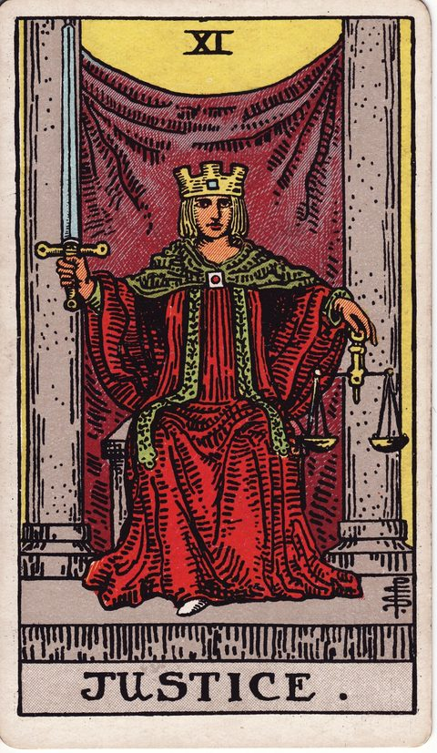
When you're torn over saying noKey card: Justice
Read the thinking →For anyone who can't say no to invitations or requests and feels torn. This page introduces ideas for drawing a line without regret, through what's really behind being unable to say no, a third shape — accepting with changed conditions — the tarot cards connected to it, and questions to ask yourself.
Is the reason you want to say no the content, the volume, or the timing?
When you're torn over reaching outKey card: Two of Cups
Read the thinking →For anyone torn over whether to reach out, typing a message and deleting it. This page introduces ideas for sorting out your feelings, through what's really behind being unable to send, how to tell apart sending, waiting, and letting it go, the tarot cards connected to it, and questions to ask yourself.
In one sentence, what is the purpose of this message?

When you're torn over apologizingKey card: Temperance
Read the thinking →For anyone torn over whether to apologize, who keeps putting it off. This page introduces ideas for moving a relationship forward, through what's really behind being unable to apologize, how to tell apart apologizing and watching how things go, the tarot cards connected to it, and questions to ask yourself.
Of what happened to the other person, what weighed heaviest?
When you're torn over canceling a contractKey card: Four of Pentacles
Read the thinking →For anyone torn over canceling a subscription or contract, who keeps paying for something they don't use. This page introduces ideas for deciding, through what's really behind being unable to let go, how to judge by cost and actual use, the tarot cards connected to it, and questions to ask yourself.
In the last three months, how many times did you actually use it?
When you're torn over taking a tripKey card: Three of Wands
Read the thinking →For anyone torn over whether to take a trip, or where to go. This page introduces ideas for deciding a travel plan, through what's really behind being unable to settle, how to narrow down budget, schedule, and purpose, the tarot cards connected to it, and questions to ask yourself.
What do you most want from this trip — rest, a break from the everyday, or time with someone?
When you're torn over starting to investKey card: Ace of Pentacles
Read the thinking →For anyone torn over whether to start investing. This page brings together perspectives for sorting out, separately, the desire to grow your money, the fear of loss, and the impatience of falling behind others, along with the tarot cards connected to it and questions to ask yourself.
How much, out of surplus funds that won't affect your life, can you put into investing?
When you're torn over taking out insuranceKey card: Four of Pentacles
Read the thinking →For anyone torn over whether to take out insurance, or what coverage they need. This page brings together perspectives for judging what cover you truly need, thinking separately about the size of your anxiety and the room in your household budget, along with the tarot cards connected to it and questions to ask yourself.
What do you fear most — in which situation, and a shortfall of how much?
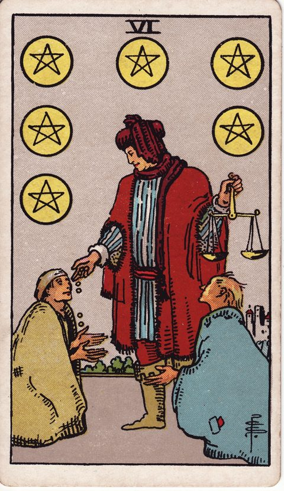
When you're torn over lending moneyKey card: Six of Pentacles
Read the thinking →For anyone asked by a friend or family member to lend money, and feeling torn. This page brings together how to draw the line if you lend and how to communicate if you decline, perspectives for protecting the relationship, the tarot cards connected to it, and questions to ask yourself.
Is the amount requested within a range that wouldn't affect your life even if it didn't come back?
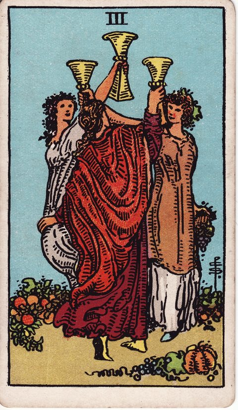
When you're torn over going for drinksKey card: Three of Cups
Read the thinking →For anyone torn over whether to go for drinks or decline. This page brings together perspectives for sorting out the balance between the importance of social ties and your physical condition, your wallet, and your time alone, along with the tarot cards connected to it and questions to ask yourself.
In your condition today, could you enjoy it through to the end?
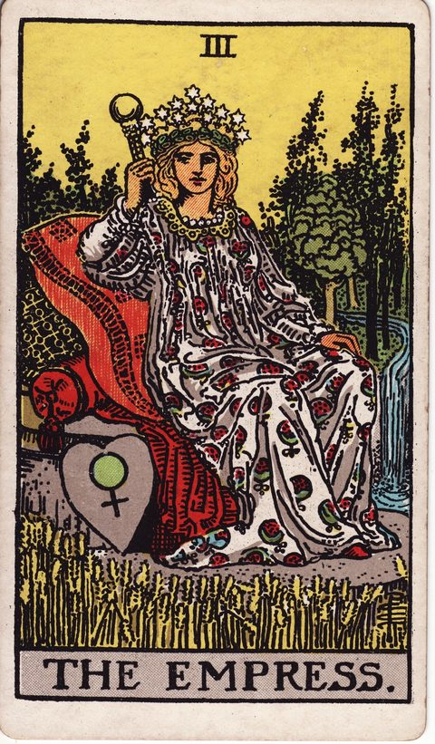
When you're torn over getting a petKey card: The Empress
Read the thinking →For anyone torn between the desire to get a pet and anxiety about the effort of care and the cost. This page brings together perspectives for sorting things out by making the responsibility of welcoming a life concrete, along with the tarot cards connected to it and questions to ask yourself.
Where in your current life would you place the time for daily care?


Other decisions
When you're torn over buying a homeKey card: Ten of Pentacles
Read the thinking →For anyone torn over buying a home, who can't leave the show home. This page introduces ideas for sorting out a big decision, through what's really behind being unable to settle, how to tell apart buying, not buying, and postponing, the tarot cards connected to it, and questions to ask yourself.
Could you continue the monthly repayments even if your income fell by twenty percent?
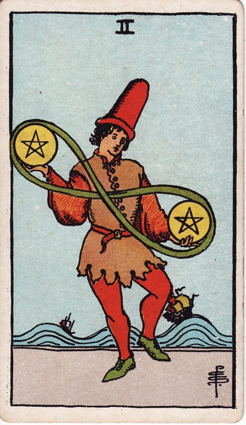
When you're torn between owning and rentingKey card: Two of Pentacles
Read the thinking →For anyone torn between owning and renting, who can't settle on calculations of gain and loss alone. This page introduces ideas for deciding your own measure for housing, through what's making this hard, how to compare money and flexibility, the tarot cards connected to it, and questions to ask yourself.
When you compare under the same conditions, how large is the difference in the total over ten years?
When you're torn over leaving the family homeKey card: The Fool
Read the thinking →For anyone torn over leaving the family home and starting to live alone. This page introduces ideas for deciding your step, through what's really behind being unable to settle, how to view money, independence, and distance from family, the tarot cards connected to it, and questions to ask yourself.
Can you state the upfront costs of living alone and your monthly living expenses in numbers?
Once you have read the card meanings, turn to your own two options.
Draw a card and organize your decision